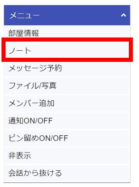

PCブラウザ
文字入力
最大1000文字を入力することができます。
また「Enterで送信」をON/OFFに切り替えることができます。

「Enterで送信」チェックON/OFFでの、改行・送信の対応表
| Enter | Shift+Enter | Ctrl+Enter | |
|---|---|---|---|
| Enterで送信をON | 送信 | 改行 | 送信 |
| Enterで送信をOFF | 改行 | 改行 | 送信 |
ファイル・写真・動画の添付
クリップのアイコンをクリックすると、ファイル選択画面が出てくるので、添付したいファイルを選択します。
 添付するとクリップアイコンにマークが付きます。
添付するとクリップアイコンにマークが付きます。

その後、送信ボタンを押すとファイルが送信されます。
ファイルをドラッグ＆ドロップでも添付できます。

スクリーンショットやSnipingToolで切り取った画像を、そのままメッセージ入力欄に張り付けてファイル添付することもできます。

スタンプ
自分で画像を登録して、スタンプとして使用することができます。 顔のアイコンをクリックすると、スタンプ画面が表示されます。


(＋)マークを押すと、スタンプ追加画面が表示されるので、好きな画像を登録します。
※拡張子がpngで背景が透過の画像を登録すると、スタンプらしく登録されます。

相手が送信したスタンプは、自分のスタンプにすることもできます。

既読の確認
メッセージを誰かが読むと、メッセージの吹き出しの下に「既読」が表示されます。

「既読」をクリックすると、そのメッセージの既読・未読状況を確認できます。


返信
メッセージの右下の「▽」ボタンをクリックします。
その後、「返信する」をクリックします。

テキスト入力欄の上にピンク色で返信元メッセージが表示されると、返信モードとなります。

返信モードの状態で作成・送信したメッセージは、自分のメッセージの上部に返信元メッセージが添付された状態で表示されます。

赤枠の返信元メッセージをクリックすると、返信履歴が表示されます。

修正
メッセージの右下の「▽」ボタンをクリックします。
その後、「修正する」をクリックします。

メッセージ修正画面が表示されます。ここで修正したい内容に書き換えます。

修正したメッセージには「修正あり」のマークが表示されます。

自分のメッセージに対してのみ「修正あり」マークをタップすると、修正前、修正後の内容を見ることができます。

ノート
個人ノート

画面右上のアイコンより個人ノートを起動できます。
自分しか見ることができないノートになっています。
スマホ版にもノート機能があり、入力したデータは同期されます。

グループノート
それぞれのメンバーとで、ノートを共有できます。 1対1のコンタクトや、多人数のグループにノートが存在します。 そのメンバー内のみ見れるノートになります。
チャット画面の右のメニューよりノートを選択します。

グループノートは、自分以外も書き込み・削除を行うことができます。2人以上が同時に編集・保存すると保存日時の遅いデータが反映されます。
そのため、誤ってどなたかがデータを編集・保存してしまうと、共有してるメンバー全員に影響します。
ノートの用途
個人ノート：TODOリスト など個人用メモ
グループノート：グループ内での定例会議のZoomのURL、院内・部署の年間予定・特記事項 などグループでの共有事項
(いつでもすぐに確認したい事項)